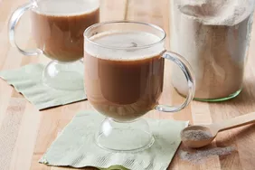

Tea

Description
A simple and refreshing cup of tea that can be enjoyed any time of the day.
Easy to prepare and perfect for relaxing.
Ingredients
- 1 cup water
- 1 tea bag
- 1 teaspoon sugar (optional)
- Milk (optional)
Steps
- Step : Pour water into a kettle or saucepan.
- Step : Bring the water to a boil.
- Step : Place the tea bag in a cup.
- Step : Pour the hot water over the tea bag.
- Step : Let the tea steep for 3 to 5 minutes.
- Step: Remove the tea bag and add sugar or milk if desired.
- Step : Stir well and enjoy.
Home